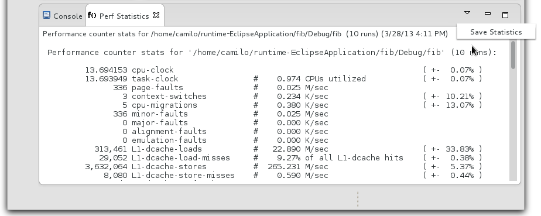
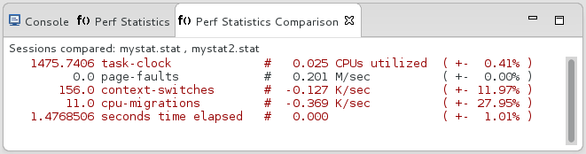

| Sessions | ||
|---|---|---|
|
|
|
|
| Perf Views | Updating This Document | |
The perf plug-in allows you to store profiling sessions to keep track of a project's performance history. Furthermore, sessions allow the plug-in to provide a number of comparison features to investigate differences in performance.
Currently profile and statistics sessions can be saved by using the menu commands of the respective views. Note that if there has not been a profile or stat run, these commands will be disabled as there would be no data available to save.


These sessions will be located under the profiled project root with their user specified names.

Comparisons between sessions is supported by this plug-in, allowing for quick feedback about a program's performance.
Comparison of Perf sessions is integrated into the team comparison context menu. Simply select two files generated by either "perf-report" or "perf-stat", right click to get the context menu, go to "Compare With", and click "Each Other". The "Reverse" icon located to the far right within the view can reverse the comparison order.

Automatic comparison actions auto-select the most recent profiling sessions and display their result as above. Note that this type of comparison will only be enabled after profiling your project at least two times to gather enough data to compare.
To start an automatic comparison simply select the "Compare Latest" menu action.

|
|

|
|
| Perf Views | Updating This Document |